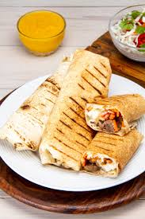

Shawarma Recipe

Picture of shawarma
Ingredients
- Cabbage
- Carrots
- Lettuce
- 1 cup Mayonnaise
- 1/2 Cup Ketchup
- 1/4 Cup Sweet chilli sauce
- 2 Tablespoons Suya spice
- 600g chicken
- 1/2 Tbs garlic
- 1/2 Tbs ginger
- 1/2 Tbs paprika
- 1/2 Tbs italian seasoning
- 1 tsp Salt
- 1 tsp Cayenne pepper
- 1 tsp Curry powder
- 1/2 Tsp adobo
- 1 cube chicken seasoning
- Vegetable oil
Steps
- Slice the cabbage, carrot and lettuce.
- Mix your mayonnaise, ketchup, sweet chilli sauce and suya spice.
- Cut your chicken into pieces and add your spices and a little bit of vegetable oil
- Make sure the chicken is well coated
- Heat up your oil in a pan
- Fry your chicken pieces, make sure it's not crowded because you want to fry them.Then set the chicken aside
- In a big bowl, combine the vegetables, sauce mix and the chicken pieces. MKae sure you mix it thoroughly
- Coat your wrap with the sauce and add the chicken and vegetables
- Roll the wrap and place it on a pan to heat it up.